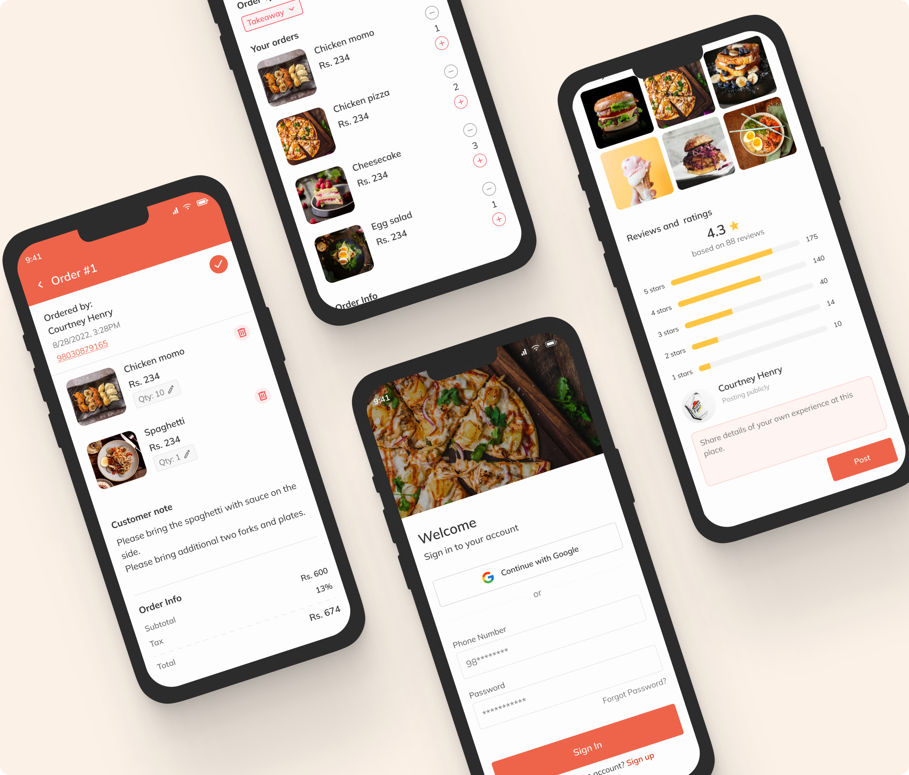
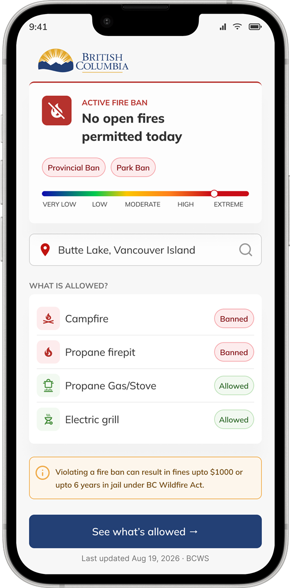
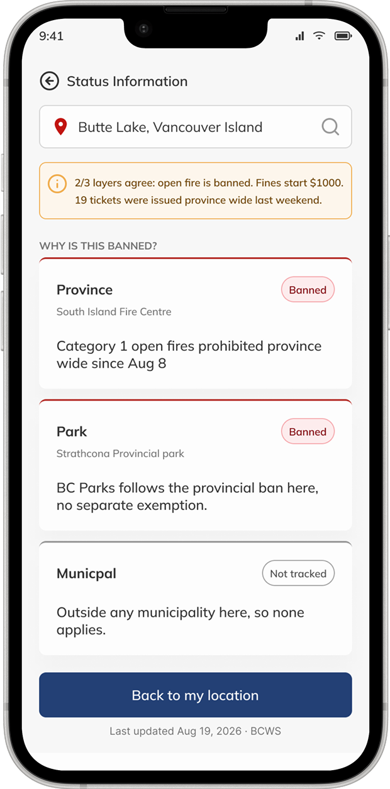
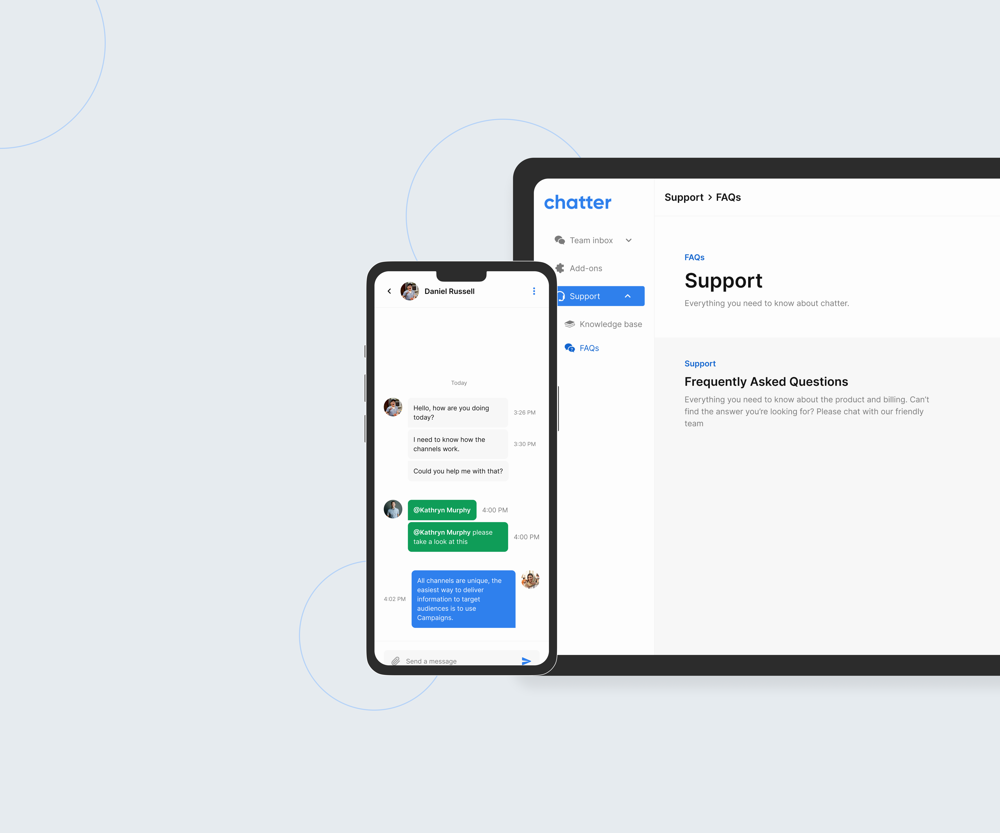
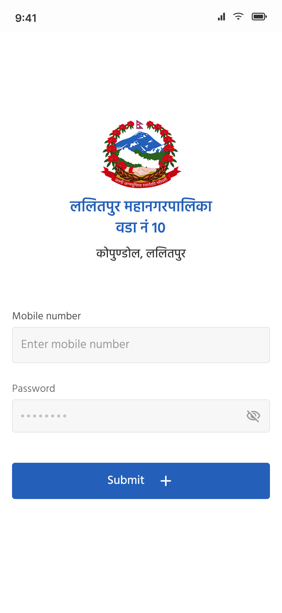

Product Designer · Dallas, TX
Research → Design → Production.
I design products that turn user research into shipped software, across mobile, web, and B2B SaaS. Four-plus years end-to-end, from problem framing to production code.
I work at the intersection of product, design, and code, going from user research through information architecture, high-fidelity Figma prototypes, and production frontend.

01 / Mobile · Two-sided platform
A two-sided food-ordering app for Nepal, designed to give restaurants a fairer, lower-commission alternative to the dominant platform.


02 / UX Case Study · Mobile · Civic Safety
A decision feature for the BC Wildfire Service app: one plain-worded verdict, "Is a fire safe and legal here, right now?", in under 30 seconds instead of 5+ map steps.

03 / B2B SaaS · Multi-tenant
Multi-tenant SaaS chat platform, embeddable widget, agent web panel, and GraphQL/REST API. Intercom-class capability for Nepali businesses.

04 / Civic · Mobile · Bilingual
A bilingual household and individual census app for Lalitpur Metropolitan City Ward 10, replacing paper surveys with digital capture and GPS-tagged proof of visit.